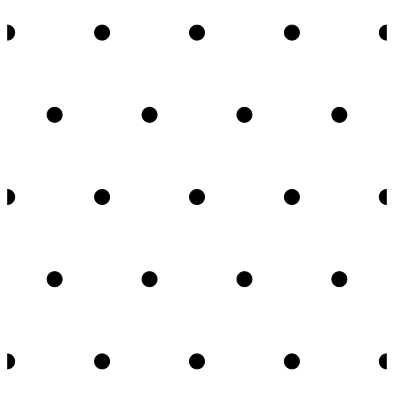
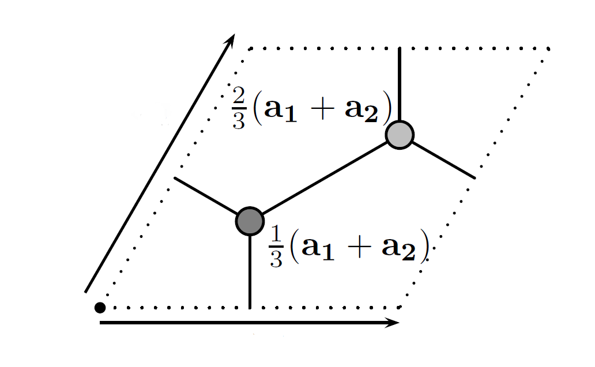
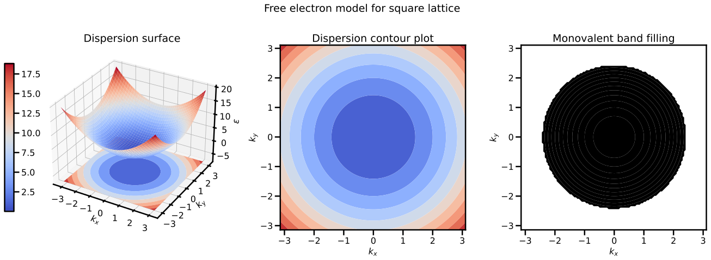
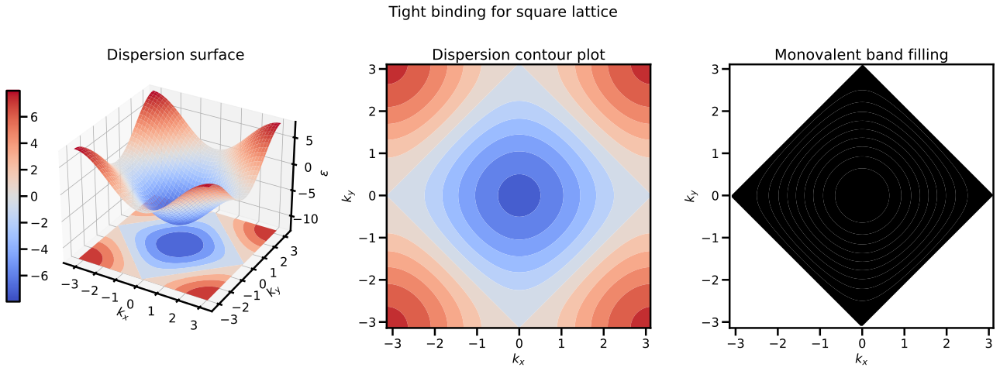
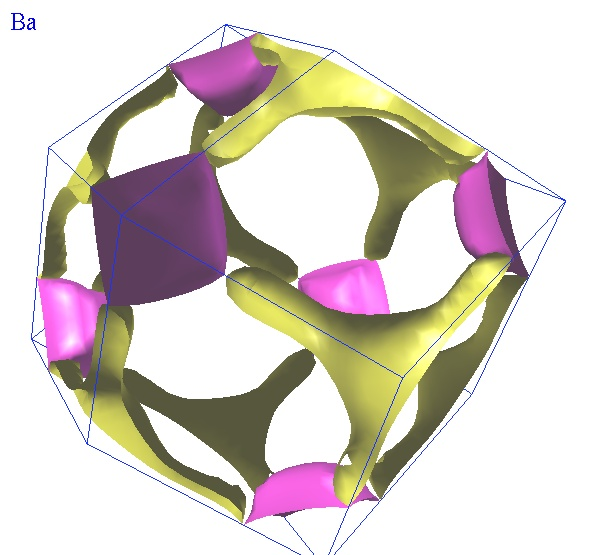

Practice exam¶
The practice exam can be found here, and it was written to provide a flavour for the style of examination one can expect from the course as taught by me, rather than the past examinations which have followed a different course structure. Given this is pitched as a learning tool, I have included some discussion that would not be expected in an exam, but in addition to helping you achieve the best possible result on the exam, I care much more about you learning and understanding the content: hopefully this resource proves useful.
Question 1¶
This question focuses on the physics of solids without considering the microscopic structure.
-
What is the Einstein model of a solid? List both the successes and the shortcomings of the model.
The Einstein model builds on the Boltzmann model for solids, which described matter as being comprised of particles interacting through a harmonic potential which was modelled using statistical mechanics. Einsein's model was to say the each particle was in an identical harmonic potential (characterised by oscillation frequency \(\omega\)), which was basically injecting a basic form of quantum mechanics. This had the effect of explaining the low-temperature behaviour of the heat capacity (name that is "freezes out"), but under predicts the heat capacity as there are no additional ways to store energy.
-
State the assumptions of the Debye model of heat capacity for a solid.
The Debye model remedies some of the shortcomings of the Einstein model by considering collective oscillations of particles in the solid, specifically noting that waves should exist in a solid (sound waves, or later, phonons) and these could be quantised in the same way as the light field (à la Plank). The fundamental assumption of the model as we consider it are the system is isotropic, with 3 polarisations of sound waves which obey a linear dispersion relation. Importantly, there is also a maximum frequency up to which oscillations occur and beyond this, they no longer occur, but there is no physical grounding to this justification, rather it just makes the maths work out.
Whilst the Debye model does a better job than the Einstein model, notably reproducing the \(T^3\) behaviour of the heat capacity at low temperature, it fails to include energy stored by electrons in the material, which the Sommerfeld/free-electron model incorporates to give a pretty good model where one is agnostic to the microscopic properties of the system.
-
Einstein obtained an expression for the expectation value of the energy of a single oscillator at frequency \(\omega\) \(\(\langle E \rangle = \hbar\omega\left(n_{\mathrm{B}} (\beta\hbar\omega) + \frac{1}{2}\right)\)\) Consider a three-dimensional solid as modelled using the framework of Debye.
-
Write an expression for the total energy in the system for oscillators with frequencies \(\omega(\mathbf{k})\)
The expression above provides the energy for a single oscillator, and we have a bunch of them, so we need to add them up! In the usual way, because of the 3 modes of polarisation (spin) there is a factor of 3 out the front, but otherwise the result follows directly from above:
-
What is the density of states \(g(\omega)\)? Justify the validity of the expression
The density of states \(g(\omega)\) (as it says on tin!) tells you about the number of states per unit frequency (in this case). More succinctly, the number of states between \(\omega\) and \(\mathrm{d}{\omega}\) is given by \(g(\omega)\mathrm{d}{\omega}\).
In order to justify the expression, we will need to take the result from the previous question and show it is equivalent to that stated. To start, in the usual way we must convert the sum to an integral. Ultimately this happens as we impose periodic boundary conditions to the problem, which has the effect of discretising reciprocal space and meaning that if we want to count the number of states (or equivalently add them up) we can use the density of points in \(k-\)space to construct an approximation to the sum over \(\mathbf{k}\):
\[ \langle E \rangle \approx 3 \frac{L^3}{(2\pi)^3} \int \mathrm{d}\mathbf{k} \hbar \omega(\mathbf{k}) \left(n_{\mathrm{B}} (\beta\hbar\omega(\mathbf{k})) + \frac{1}{2}\right) \]We then compute move into spherical coordinates to compute this integral (or at least it to a one-dimensional integral) as the system is isotropic, so we can write
\[ \langle E \rangle \approx 3 \frac{L^3}{(2\pi)^3} \int_0^{\infty} \mathrm{d}k ~ 4\pi k^2 ~ \hbar \omega(\mathbf{k}) \left(n_{\mathrm{B}} (\beta\hbar\omega(\mathbf{k})) + \frac{1}{2}\right) \]which is essentially in the form as requested, given we know that for sound, \(\omega = v_s k\). The only other point of note is that the integral in this case is over all \(k\) (or equivalently \(\omega\)), whereas that presented is up to a maximum frequency. This is a fundamental assumption of the Debye model, and the change of limit can just be imposed, but the change definitely warrants a comment!
The question would have been better written combining it with the next part, but I was trying to lay out the question with bite-sized steps that could follow. You be the judge of whether that worked.
-
Assuming linear dispersion, what is the density of states \(g(\omega)\) in the above expression?
Most of the heavy lifting had been done by this point, we just need to finish transforming the equation above explicitly using the relation \(\omega = v_s k\):
\[\begin{align*} \langle E \rangle & \approx 3 \frac{L^3}{(2\pi)^3} \int_0^{\infty} \mathrm{d}k ~ 4\pi k^2 ~ \hbar \omega(\mathbf{k}) \left(n_{\mathrm{B}}(\beta\hbar\omega(\mathbf{k})) + \frac{1}{2}\right) \\ & = \frac{12\pi L^3}{(2\pi)^3 v_s^3} \int_0^{\infty} \mathrm{d}\omega ~ \omega^2 ~ \hbar \omega \left(n_{\mathrm{B}} (\beta\hbar\omega) + \frac{1}{2}\right) \\ & = \int_0^{\omega_\textrm{cutoff}} \mathrm{d}\omega~g(\omega)~\hbar\omega~\left(n_\mathrm{B}(\beta\hbar\omega(\mathbf{k})) + \frac{1}{2} \right) \end{align*}\]where we identify the density of states
\[ g(\omega) = \frac{12\pi L^3 \omega^2}{(2\pi)^3 v_s^3} \] -
The cutoff frequency can be evaluated by ensuring there are the correct number of modes in the system. If there are \(N\) oscillators, what should be the total number of modes? Justify your response.
If we have \(N\) oscillators, there should be \(3N\) modes, as there are 3 degrees of freedom (three dimensions of motion) for each oscillator
-
Compute the cutoff frequency \(\omega_{\textrm{cutoff}}\)
With the response from above and the definition of the density of states
and therefore
\[ \omega_\textrm{cutoff}^3 = 6\pi^2v_s^2\frac{N}{L^3} = 6\pi^2v_s^2 n \]
-
-
A triumph of Debye's theory was the explanation of the cubic dependence on temperature for the heat capacity at low temperature. Briefly explain why this behaviour occurs.
Without going to town, we have an expression for the total energy in the system \(\langle E \rangle\), so in principle we could compute the heat capacity directly through When evaluated, the energy \(\langle E \rangle\) (perhaps unsurprisingly) yields an \(E \propto T^4\) relation - see the Stefan-Boltzmann law here and thus the behaviour, but physically, we have a system which is able to store more energy at low temperature than an Einstein solid. Why is this the case? Well, Einstein has independent harmonic osciallators, which are "all or nothing", in that for \(E<\hbar\omega\), nothing can happen, whereas the Debye model allows for energy to be stored in the collective oscillations of the system (phonons) and thus the system still reacts at low temperature.
-
Careful observation of the heat capacity for metals at very low temperatures shows deviation from this cubic behaviour. Provide a brief explanation for this discrepancy.
This is such a natural next question: where else can I store energy? Well at really low temperature, even the collective oscillations start to freeze out, but for a system of free electrons (as is modelled in the Sommerfeld model), the system can absorb small amounts of energy through the excitation of electrons at the Fermi surface. Note that this ties in nicely with material from the latter part of the course where we spent much time looking at the origins of Fermi surfaces.
Question 2¶
This question focuses on incorporating microscopic structure into the physics of solids in one dimension.
-
Consider a one-dimensional diatomic chain, where the spring constants between neighbouring atoms are identical and equal to \(\kappa\), but neighbouring masses are different, alternating between \(m_1\) and \(m_2\). You are going to derive the dispersion relation for this system.
-
Sketch the system as described above, ensuring to mark the unit cell length \(a\) on the diagram
See an image shamelessly pulled from assignment 3. Given I made it, I feel I can own "sketching" this:

-
Denoting the position of the \(n^{\textrm{th}}\) particle of mass \(m_1\) as \(x_n\) and the position of the \(n^{\textrm{th}}\) particle of mass \(m_2\) as \(y_n\), show that the equations of motion for the system are
These equations are constructed from Newton's second law, and are best illustrated through an image (hence the requirement to sketch it above!) where one can see that the force on \(x_n\) in the \(-x\) direction will be given by \(\kappa\) times the extension/compression \(\delta x_n - \delta y_{n-1}\) and the force in the \(+x\) direction will be given by \(\kappa\) times the extension/compression \(\delta y_n - \delta x_n\), which when combined (taking care with the signs!) yields the top equation, and the 2\(^\textrm{nd}\) equation can be constructed similarly.
-
Solve that above set of equations for the normal modes of the system to show that
As we are looking for normal modes, we look for solutions where all bodies oscillate with the same frequency \(\omega\), namely we look for wave-like solutions of the form
\[ \begin{aligned} \delta x_{n} &=A_{x} e^{i k a n-i \omega t} \\ \delta y_{n} &=A_{y} e^{i k a n-i \omega t} \end{aligned} \]which plugged into our equations of motion gives
\[ \begin{aligned} -m_{1} \omega^{2} A_{x} e^{i k n a} &=-2 \kappa A_{x} e^{i k n a}+\kappa A_{y}\left(e^{i k n a}+e^{i k(n-1) a}\right) \\ -m_{2} \omega^{2} A_{y} e^{i k n a} &=-2 \kappa A_{y} e^{i k n a}+\kappa A_{x}\left(e^{i k n a}+e^{i k(n+1) a}\right) \end{aligned} \]which can be simplified into
\[ \begin{aligned} \omega^{2} A_{x} &=2\left(\kappa / m_{1}\right) A_{x}-\left(\kappa / m_{1}\right)\left(1+e^{-i k a}\right) A_{y} \\ \omega^{2} A_{y} &=2\left(\kappa / m_{2}\right) A_{y}-\left(\kappa / m_{2}\right)\left(1+e^{i k a}\right) A_{x} \end{aligned} \]which defines an eigenvalue problem for \(\omega^2\). Therefore we must find the roots of the determinant
\[ \left|\begin{array}{cc} 2\left(\kappa / m_{1}\right)-\omega^{2} & -\left(\kappa / m_{1}\right)\left(1+e^{-i k a}\right) \\ -\left(\kappa / m_{2}\right)\left(1+e^{i k a}\right) & 2\left(\kappa / m_{2}\right)-\omega^{2} \end{array}\right| \]which yields the equation
\[ \begin{aligned} &0=\omega^{4}-\omega^{2}\left(2 \kappa\left(1 / m_{1}+1 / m_{2}\right)\right)+\frac{\kappa^{2}}{m_{1} m_{2}}\left(4-\left(1+e^{i k a}\right)\left(1+e^{-i k a}\right)\right) \\ &\left.0=\omega^{4}-\omega^{2}\left(\frac{2\left(m_{1}+m_{2}\right) \kappa}{m_{1} m_{2}}\right)+\frac{\kappa^{2}}{m_{1} m_{2}}(2-2 \cos (k a))\right) \end{aligned} \]and ultimately
\[ \begin{aligned} \omega^{2} &=\frac{\kappa}{m_{1} m_{2}}\left(m_{1}+m_{2} \pm \sqrt{m_{1}^{2}+m_{2}^{2}+2 m_{1} m_{2} \cos (k a)}\right) \\ &=\frac{\kappa}{m_{1} m_{2}}\left(m_{1}+m_{2} \pm \sqrt{\left(m_{1}+m_{2}\right)^{2}-4 m_{1} m_{2} \sin ^{2}(k a / 2)}\right) \end{aligned} \]as required.
-
Find the sound velocity for the acoustic branch around \(k=0\)
The acoustic branch(es) are those which by definition have a dispersion around \(k=0\) which is linear, and thus, one can immediately write and moreover, we know that \(\omega = \sqrt{\kappa/m}\) for harmonic potentials. But this is not really finding the velocity, just knowing what it should be! To find it, we must expand the low-energy band around \(k=0\) in the expression above:
\[ \begin{aligned} \omega^{2} &=\frac{\kappa}{m_{1} m_{2}}\left(m_{1}+m_{2} \pm \sqrt{m_{1}^{2}+m_{2}^{2}+2 m_{1} m_{2} \cos (k a)}\right) \\ & \approx \frac{\kappa}{m_{1} m_{2}}\left(m_{1}+m_{2} \pm \sqrt{m_{1}^{2}+m_{2}^{2}+2 m_{1} m_{2} (1 - \frac{k^2 a^2}{2})}\right) \\ & = \frac{\kappa}{m_{1} m_{2}}\left(m_{1}+m_{2} \pm (m_1 + m_2)\sqrt{1-\frac{k^2 a^2 m_1 m_2}{(m_1 + m_2)^2}}\right) \\ & \approx \frac{\kappa}{m_{1} m_{2}}\left(m_{1}+m_{2} \pm (m_1 + m_2)\left(1-\frac{k^2 a^2 m_1 m_2}{2(m_1 + m_2)^2}\right)\right) \end{aligned} \]which for the low energy (acoustic) branch givens
\[ \omega^{2} = \kappa \frac{k^2 a^2}{2(m_1 + m_2)} \]which is indeed a solution of the form
\[ \omega = v_s k \]where \(v_s = a\sqrt{\frac{\kappa}{2(m_1 + m_2)}}\)
-
-
We now alter our one-dimensional diatomic chain to a triatomic chain. How many optical modes and how many acoustic modes would you expect?
If there are 3 atoms per unit cell, we would expect 3 modes, one of which will be acoustic and two will be optical
-
The one-dimensional chain provides an excellent model for understanding the properties of solids in one dimension. With explicit reference to covalent bonding as modelled through the linear combination of atomic orbitals, explain why it that we can use a harmonic potential to well describe the interatomic potential.
If we consider two distinct atoms, with some interatomic separation \(\Delta x\), to model the electronic states of the system we must consider the influence of both nuclei and the other electron for a given electron, for which we construct a Hamiltonian \(\hat{H} = \hat{V}_1 + \hat{V}_2 + \hat{K}\). In the simplest case of LCAO, we consider only the ground state for each atom and make an assumption: that the states of out new (combined) system will be a linear combination of our original states. To calculate the energy of these new states, we use the variational method (which is done in its full glory in the Chemistry section of the notes) but the ultimate outcome is that we end up with bonding and antibonding states which have an energy determined by the interatomic spacing, as shown in the plot below:
This model has not taken into account the interaction between nuclei, and thus this is not actually physical: we know that matter does not collapse into a singularity, and thus when we include a repulsive force at small atomic separations, we end up with a potential like that shown below (in this case the Lenard-Jones potential):
From here is almost a mathematical exercise, in that we have a potential which has a local minimum, and thus we can approximate this local minimum to be a parabola, that is a harmonic potential. This is not always going to work well, but for low temperatures oscillations within this potential will have sufficiently small amplitude such that the potential landscape is well modelled by a parabola. A plot of the above potential with a parabolic approximation is shown below:
Limitations of this approximation come in the form of high temperature behaviour, and anisotropy. The origin of this is stunningly not profound: when the potential ceases to look like a parabola, approximating it with a parabola is not a good idea. A notable example of the failure of this model is that it does not predict thermal expansion as this requires anharmonicity in the potential (see assignment two), but in many cases, it can provide a qualitative understanding of basic material properties. Moreover (and much deeper down the rabbit hole) the formulations of field theories which are centred around creation and annihilation operators have a direct link to harmonic potentials, meaning these systems have a trivial generalisation (well, a well-trodden generalisation) to more advanced formalisms.
Question 3¶
This question focuses on the describing the geometry of, and the scattering from, solids.
-
A triangular lattice has primitive lattice vectors \(\mathbf{a_1} = a \hat{\mathbf{x}}\) and \(\mathbf{a_2} = (a/2) \hat{\mathbf{x}} + (a\sqrt{3}/2) \hat{\mathbf{y}}\).
-
Draw the lattice described by the above basis vectors (draw at least \(3 \times 3\) lattice points)
Digitial how about I do it in
python?  -
On the lattice above, draw both the primitive unit cell as defined by the primitive lattice vectors and the Wigner-Seitz cell
Coneventional cell included at no extra cost

-
Find the primitive lattice vectors of the reciprocal lattice
To compute the primitive lattice vecotrs for the reciprocal lattice, we seek vectors \(\mathbf{b}\) such that \(\mathbf{a}_i \cdot \mathbf{b}_j = 2\pi\delta_{i,j}\). In three dimensions, one has the general formula and permutations therein, with the simplest path to victory being an assignment of \(\mathbf{a}_3 = \hat{\mathbf{z}}\). The product \(\mathbf{a}_1 \cdot (\mathbf{a}_2 \times \mathbf{a}_3) = a^2 \sqrt{3}/2\), and then
\[\begin{align*} \mathbf{b}_1 & = 2\pi \left[ (a\sqrt{3}/2) \hat{\mathbf{x}} - (a/2) \hat{\mathbf{y}} \right]/a^2 \sqrt{3}/2 = (2\pi/a) \left[ \hat{\mathbf{x}} - (\sqrt{3}/3) \hat{\mathbf{y}} \right] \\ \mathbf{b}_2 & = 2\pi a \hat{\mathbf{y}} / a^2 \sqrt{3}/2 = (2\pi/a) (2\sqrt{3}/3) \hat{\mathbf{y}} \end{align*}\] -
What physical significance does the Wigner-Seitz cell of the reciprocal lattice hold?
The Brillouin zone for a system described by a periodic potential in real space, that is, the volume which holds all possible unique momentum states, is given by the Wigner-Seitz cell of the reciprocal lattice.
-
-
What basis could be used in combination with the above lattice to return a honeycomb structure (that is, the structure of graphene)?
\[ 1/3(\mathbf{a_1} + \mathbf{a_2}) \quad \textrm{and} \quad 2/3(\mathbf{a_1} + \mathbf{a_2}) \]
-
Now consider the structure of CsCl: a simple cubic with the basis Cs at \([0,0,0]\) and Cl at \([1/2, 1/2, 1/2]\)
-
What kind of bonding would you expect for this structure?
CsCl is a group I element, and Cl is a group VII element, which we would suspect would be an ionic bond due the electronegativity of chlorine. As a general, if you see group VII, it is likely to be ionic, those suckers take electrons like nobody's business!
-
Compute the structure factor \(S\) for X-ray scattering from CsCl with a general set of Miller indices \((hkl)\)
The structure factor is the Fourier transform of atoms in the unit cell:
where \(f_\alpha\) is the scattering form factor for a given element (which technically is also a function of \(\mathbf{G}\)). So for Cs at \([0,0,0]\) and Cl at \([1/2, 1/2, 1/2]\):
-
-
Now consider the case of pure Cs, which has the same structure but with the chlorine atom replaced by a caesium atom (a simple cubic with the basis Cs at [0,0,0] and [1/2, 1/2, 1/2]).
-
What kind of bonding would you expect for this structure?
We would expect this type of system to be metallic, which in some sense is akin to covalent bonding, whereby it is energetically favourable for the electrons to be shared across the system rather than be localised on individual nuclei.
-
Using a previous result or otherwise, compute the structure factor \(S\) for X-ray scattering for pure Cs with a general set of Miller indices \((hkl)\)
From the previous question, we can make the substitution \(f_{\textrm{Cl}} \rightarrow f_{\textrm{Cs}}\):
\[ S_{(hkl)} = f_{\mathrm{Cs}} \left[1 + (-1)^{h+k+l} \right] \]which we can clearly identify will vanish for some values of \((hkl)\), that is, a selection rule exists.
-
-
Consider the case of X-ray scattering from the planes defined by the Miller indices (210). What scattered intensity would one expect in the case of CsCl versus pure Cs?
We can see in the case of pure Cs, the structure factor and hence the scattered intensity will go to zero for \(h+k+l\) being odd, and thus for (210) no scattered intensity will be measured. In the case of CsCl, one cannot say too much without knowing the from factors \(f_{\mathrm{Cs}} + f_{\mathrm{Cl}}\), but there will be some intensity as \(f_{\mathrm{Cs}} \ne f_{\mathrm{Cl}}\)
-
The sample of CsCl was accidentally mislabelled, and it turns out that it is actually CsI, which has the identical structure except with Cl (\(Z = 17\)) replaced with I (). Again, for diffraction from the planes defined by the Miller indices (210), what scattered intensity would expect from the CsI as compared to the CsCl? For reference, the atomic number of caesium is \(Z = 55\).
What a follow up question! Basically, in the previous question, we could not say all too much about \(f_{\mathrm{Cs}}\) or \(f_{\mathrm{Cl}}\), but as a very vague general trend, \(f \sim Z\), and thus with a \(\Delta Z = 38\) in the case of CsCl, the form factors will not be all that similar. In the case of CsI, \(\Delta Z = 2\) and thus one would expect the form factors to be close, and thus the scattered intensity for (210) would be much supressed as compared to the CsCl case/
Question 4¶
This question focuses on band structure and its applications
-
What is meant by the free electron model, the nearly-free electron model and the tight binding model? In what circumstances are the models appropriate?
In all cases, one should consider the models as determining which momentum states exist (and hence can be occupied). In the case of the free electron model, all possible states can be occupied, they are after all free electrons, so there is no potential which enforces reciprocal space structure. The nearly-free electron model is a weak perturbation to the free electron model by a periodic potential, whereby we have a system where electrons act mostly as free electrons, except for when the wavefunction has a strong component on the length-scale/momentum scale of the perturbing periodic potential. The tight binding model (as the same suggests) arises when we consider systems where electrons are tightly bound to a parent nucleus, so in some sense one could think of this as a very strong perturbation of the free electron system, where there properties are determined solely but the periodic potential.
Free electron model is appropriate for free electrons and is superseded in most in materials by the nearly-free electron model, as the strength of the perturbation due to the crystal structure can always be dialled back. But this is an important point: if a Fermi surface for a material looks like a sphere, it is going to be (or rather is) well approximated by the free electron model. On the other extreme, if the Fermi surface matches the Brillouin zone (that is, there isn't a Fermi surface) the system is well described by the tight binding model.
-
Consider a square lattice of monovalent atoms in two dimensions.
-
Roughly sketch the first Brillouin zone for the lattice (only the shape is important), and indicate the Fermi sea in the absence of a periodic potential
The reciprocal lattice of a square lattice will also be a square lattice, and the Wigner-Seitz cell of a square lattice is a square. This question is very qualitative, but is one of the most important concepts in this course, hence its appearance here.
Rather than just providing a sketch, this is a full calculation and so obviously beyond what would be expected. The dispersion relation - a surface in 2D - is shown, along with a contour plot of this surface. As each \(k\) state can hold 2 electrons, \(50\%\) of the Brillouin zone will be filled (in this case area) with the lowest states being preferentially filled. The free-electron dispersion relationship is a parabaloid, and hence we get a circular Fermi surface, with the Fermi sea being the interior of this circle.

-
Repeat the process above for both a weak and strong periodic potential
Shown below is the dispersion surface in the tight-binding model (which you can think of as a very strong periodic potential), which in contrast to the Fermi circle of a free-electron, makes a Fermi square:

A weaker periodic potential would be in-between these extremes, a circle with the points closest to the Brillouin zone boundaries filled more due to band bending.
-
-
Barium (\(Z = 56\)) is a divalent atom, and the Fermi surface is shown below:  Explain the features of this surface, explicitly referencing the 2D analogues from the previous section, and what statements (if any) can be made about the conductivity and specific heat of barium based upon the Fermi surface alone?
Still needs to be finished, but the if we consider a square BZ, a divalent nearly-free electron system would have a Fermi surface something like a circle with the same area as the BZ, but with points outside the square, that is bits that protrude into the 2nd BZ. Think of this like the extended/reduced zone schemes in 1D: when something is in the 2nd BZ (in the extended zone) this is the same as the excited 1st branch in the reduced zone scheme: we are just seeing this is 3D. The fact that there is a Fermi surface at all mean that there are nearby states which electrons can occupy, and thus the system can absorb energy: this will be a metal, and conduct both heat and electricity. It is also Barium, which you (may) know is a metal!
-
Consider a semiconductor quantum well: a material which is uniform Al\(_x\)Ga\(_{1-x}\)As with a thin layer of GaAs that is a material that has three regions. Recall that the energy eignestates of a quantum well have energies \(\(E_n = \frac{\hbar^2 \pi^2 n^2}{2 m L^2}\)\) We can model this system as a two-dimensional electron gas.
-
Show that the density of states for a free electron gas is where \(\Theta(E)\) is the Heaviside step function
I don't know why I used in \(E\) in this question, but I am going to stick with the convention of the course to use \(\varepsilon\) for the energy. In two dimensions, the number of states is given by
\[ N = 2 \frac{A}{(2\pi)^2} \int_0^{k_F} \mathrm{d}\mathbf{k} \]which evaluates to
\[ N = \frac{A}{2\pi} k_F^2 \]or equivalently \(n= N/A = k_F^2/2\pi\). For a free electron:
\[ \varepsilon = \frac{\hbar^2 k^2}{2m} \]and thus
\[ n = \frac{2m \varepsilon_F}{2\pi\hbar^2} \]By the definition of the denisty of states per unit volume, we have also that
\[ n = \int_0^{\varepsilon_F} g(\varepsilon) \mathrm{d}\varepsilon \]and thus
\[ g(\varepsilon) = \frac{m}{\pi\hbar^2} \]Note using \(g(\varepsilon) = \mathrm{d}n / \mathrm{d}\varepsilon\) yields the same result. The inclusion of the Heaviside step function is necessary as states that have a negative energy should not be included, which is obviously clear in the case of a free electron, but when we have electrons and holes in wells, we must be much more careful!
-
Show that the density of states for electrons in the well is given by where \(E_c\) is the conduction band energy.
In a quantum well, we will have the two-dimensional behaviour of the free electron plus the inclusion of the discretised states of the quantum well. We also must include the effective mass of the electron, as it is no longer a free electron. So the energy of an electron in a given state state in the well described by quantum number \(n\) is
\[ \varepsilon_n = \varepsilon_c + \frac{\hbar^2 \pi^2 n^2}{2 m_e^* L^2} + \frac{\hbar^2 k^2}{2m_e^*} \]where \(\varepsilon_c\) is the minimum energy of the conduction band (the bottom of the well). As the conduction band energy and well energy is independent of \(k\), the density of states will be the same as above, with the appropriate subsititutions and a regonition that there are no states below the ground state of the well, that is \(\varepsilon\) will only be non-zero above \(\varepsilon_c + \hbar^2 \pi^2 n^2 / 2 m_e^* L^2\), and thus
\[ g(\varepsilon_n) = \frac{m_e^*}{\pi\hbar^2} \Theta\left(\varepsilon - \varepsilon_c - \frac{\hbar^2 \pi^2 n^2}{2 m_e^* L^2} \right) \]But in the usual way, this is the density for a single mode \(n\), and there are many possible values of \(n\), and thus we must add them all up:
\[ g(\varepsilon) = \sum_n g(\varepsilon_n) = \frac{m_e^*}{\pi\hbar^2} \sum_{n=1}^{\infty} \Theta\left(\varepsilon - \varepsilon_c - \frac{\hbar^2 \pi^2 n^2}{2 m_e^* L^2} \right) \]as required.
-
What is the density of states for holes in this system?
There is delightfully little to do other than \(m_e^* \rightarrow m_h^*\), replacing the conduction band energy with the valence band energy, and recogising that only states with an energy \(\varepsilon\) below \(\varepsilon_v - \hbar^2 \pi^2 n^2 / 2 m_h^* L^2\) will be non-zero, and so one can directly write
\[ g(\varepsilon) = \frac{m_h^*}{\pi\hbar^2} \sum_{n=1}^{\infty} \Theta \left(\varepsilon_v - \frac{\hbar^2 \pi^2 n^2}{2 m_h^* L^2} - \varepsilon \right) \] -
Now consider a "quantum wire": a one-dimensional block of GaAs in embedded in the Al\(_x\)Ga\(_{1-x}\)As. The cross-section of the wire is an \(L \times L\) square and the system is well described by a one-dimensional electron gas. Show the density of states for electrons is given by
This is really the definition of rinse and repeat. We had 3D in question one, 2D in the previous section and now 1D: in exactly the same manner as above, we need to calculate the density of states in one dimension and then incorporate the now 2D square well energy spectrum. For a free electron:
\[ N = 2 \frac{L}{2\pi} \int \mathrm{d}k \]which is one dimension is a line integral from \(-k_F\) to \(k_F\) and so
\[ n = \frac{N}{L} = \frac{2 k_F}{\pi} \]and \(k\) is still \(\sqrt{2m\varepsilon}/\hbar\), so we find that
\[ g(\varepsilon) = \frac{\sqrt{2m}}{\pi\hbar} E^{-1/2} \Theta (\varepsilon) \]Now in the semiconductor, \(m\rightarrow m_e^*\) and
\[ \varepsilon_{n_1, n_2} = \varepsilon_c + \frac{\hbar^2 \pi^2 n_1^2 + n_2^2}{2 m_e^* L^2} + \frac{\hbar^2 k^2}{2m_e^*} \]as there it is a two-dimesnional well. Now we need add up all the states, so sum over both \(n_1\) and \(n_2\):
\[ \begin{aligned} g(\varepsilon) & = \sum_{n_1,n_2} g(\varepsilon_{n_1, n_2}) & \\ & = \frac{\sqrt{2m_e^*}}{\pi\hbar} \sum_{n_1=1}^{\infty} \sum_{n_2=1}^{\infty} & \left(\varepsilon - \varepsilon_c - \frac{\hbar^2 \pi^2 n_1^2 + n_2^2}{2 m_e^* L^2} \right)^{-1/2} \\ & & \times \Theta \left(\varepsilon - \varepsilon_c - \frac{\hbar^2 \pi^2 n_1^2 + n_2^2}{2 m_e^* L^2} \right) \end{aligned} \]
-